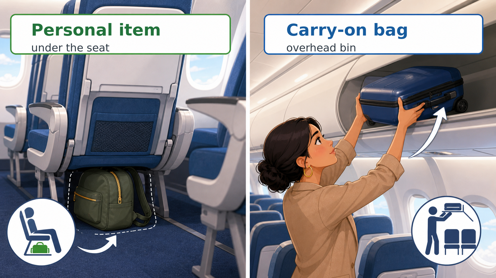
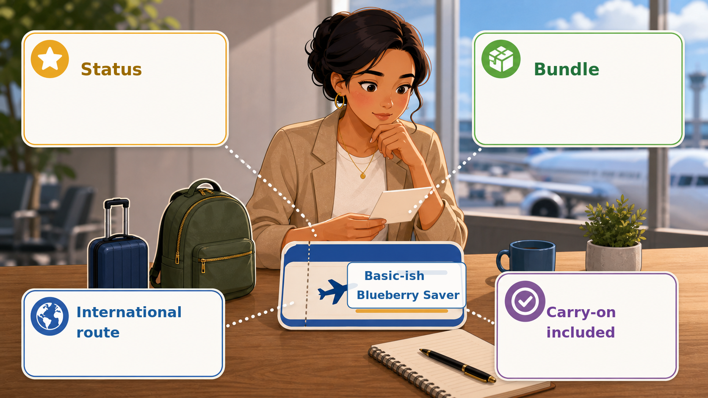

flowchart TD
Q[Maria's question] --> S[Tricky Airlines policy]
S --> E["Find<br/>evidence"]
E --> C{"Answer<br/>there?"}
C -->|Yes| Q2["Short<br/>quote"]
Q2 --> P[Paraphrase]
C -->|No| N["Do not<br/>guess"]
7 Lesson 5: Source-Grounded Reading
Duration: 2 hours
TipYour Path
You are in: Lesson 5
Before this: Lesson 4
After this: Lesson 6
Workbook page: Student Workbook -> Lesson 5 - Source-Grounded Answer in English
7.1 Start Here
Maria is traveling by plane to visit her family. She bought a low-cost airline ticket because it was the cheapest option.
Maria wants to bring two things:
- A small backpack
- A carry-on suitcase
Maria asks AI:
Can I bring a backpack and a carry-on bag with my ticket?AI answers:
Yes. Most airlines allow passengers to bring one personal item and one carry-on bag.At first, this answer sounds correct. Many students may think Maria can bring both bags. But Maria needs the exact airline policy for her exact ticket.
Today, Maria’s ticket is Basic-ish Blueberry Saver on the fictional airline Tricky Airlines.
7.2 Why This Matters
AI can give a general answer that sounds helpful. But a general answer may miss important details.
For Maria, the important details are:
- her ticket type
- the difference between a personal item and a carry-on bag
- the airline’s exact rules
- exceptions in the policy
- what Maria should check next
AI may say what is usually true. Maria needs what is true for her ticket.
TipWrite in the Book
Some exercises in the website version are interactive. You can type your answers directly on the page, and you can copy or download a backup if your teacher asks.
The main task is to write in the book, not to create separate files.
7.3 Today You Will
By the end of this lesson, you will:
- Compare a fast AI answer with a source-grounded answer.
- Read a fictional airline policy for exact details.
- Quote short evidence from the source.
- Paraphrase the evidence in simple English.
- Practice saying
I cannot answer from the provided source. - Complete the matching Student Workbook page.
NoteLesson Reference
Theme: AI may give a general answer, but people need the exact source and exact situation.
AI Focus: Source-grounded answers and hallucination awareness.
ESL Focus: Reading for details, paraphrasing, evidence language, and source titles.
Content Objective: Students will answer Maria’s baggage question using only a provided airline policy.
Language Objective: Students will use evidence phrases:
The source says...
According to the policy...
This means...
The source does not say...
Maria should check...7.4 Core Idea
Sometimes AI gives an answer that sounds correct but is not supported by the exact source. We call this a hallucination when AI invents or guesses information.
A safer way to use AI for reading is to give AI a source and ask it to answer only from that source. If the answer is not in the source, AI should say so.
In simple English:
Do not guess. Use the source.For Maria, the source is the fictional Tricky Airlines bag policy:
assets/sample-documents/ticky-airlines-bag-policy.html
NoteResearch Note
This classroom routine is informed by work on AI factuality, hallucination, and retrieval/source-grounded generation. In this lesson, we practice a simple version: use the provided source, quote short evidence, and do not guess when the source does not answer (Maynez et al. 2020; Lewis et al. 2020).
7.5 Key Vocabulary
Key Vocabulary Match
Choose the word that matches each meaning and example sentence.
Not saved yet
The original text or informationThe source is the Tricky Airlines policy.
Rules from a company, school, or groupThe policy explains bag rules.
An AI answer that invents or guesses informationA fast AI answer can be a hallucination.
A small item that fits under the seatMaria's backpack may be a personal item.
A bag for the overhead binMaria's suitcase may be a carry-on bag.
A ticket type or price typeBasic-ish is Maria's fare.
Part of the ticket or priceThe policy says one personal item is included.
A special case when the rule changesAn exception may allow a carry-on bag.
Words from the source that support an answerThe sentence in the policy is evidence.
Exact words from a sourceI used a short quote from the policy.
The same idea in your own wordsI paraphrased the carry-on rule.
Not backed up by the sourceThis answer is unsupported.
Policy phrases to notice
| Phrase | Meaning in this lesson |
|---|---|
| under the seat | The space below the seat in front of Maria. |
| overhead bin | The storage space above airplane seats. |
| selected short routes | Some short flights, not all flights. |
| booking confirmation | The ticket or email that confirms Maria’s trip details. |
| carry-on included | Words that may show Maria can bring an overhead carry-on bag. |
7.6 Sentence Frames
Maria's question was __________.
The source title is __________.
The source says __________.
According to the policy, __________.
This means __________.
The source does not say __________.
Maria should check __________.
I cannot answer from the provided source.7.7 Lesson Agenda
| Time | Activity | Purpose |
|---|---|---|
| 15 min | Warm-up: Mostly True / Mostly False | See that confident claims can still need source checking. |
| 10 min | Maria’s fast AI answer vote | Notice why a general answer sounds correct. |
| 15 min | General answer vs. source-grounded answer | Learn why the exact source matters. |
| 25 min | Guided Tricky Airlines source hunt | Find evidence about personal items, carry-ons, and Basic-ish tickets. |
| 20 min | Supported and unsupported baggage questions | Practice not guessing when the policy does not answer. |
| 20 min | Independent practice | Write one source-grounded answer for Maria. |
| 15 min | Pair speaking, reflection, and exit ticket | Explain evidence in English. |
7.8 Guided Practice
7.8.1 Warm-Up: Mostly True or Mostly False?
Students choose: Mostly True / Mostly False
Now use the same habit with Maria. The AI answer sounds correct, but we need the exact airline policy.
7.8.2 Maria’s Fast AI Answer
Read the AI answer again:
Yes. Most airlines allow passengers to bring one personal item and one carry-on bag.Vote quickly:
Can Maria bring both bags?
A. Yes
B. No
C. I am not sureNow slow down. Ask:
What words need checking?Important words:
| Word or phrase | Why it matters |
|---|---|
| most airlines | Maria is flying one specific airline. |
| personal item | This may mean a small backpack under the seat. |
| carry-on bag | This may mean a suitcase in the overhead bin. |
| my ticket | Maria’s ticket type can change the answer. |
Maria's Fast AI Answer
Write in the book. Your answers save on this device.
Not saved yet
7.8.3 General Answer vs. Source-Grounded Answer
A general answer can be useful, but it is not enough for Maria.
| Answer type | Example | Problem |
|---|---|---|
| General answer | Most airlines allow one personal item and one carry-on. | It may not match Maria’s ticket. |
| Source-grounded answer | According to the Tricky Airlines policy, Basic-ish tickets may include only one personal item on selected short routes. | It uses the exact policy. |
ImportantMaria’s Reading Rule
Before Maria packs, she should check the exact policy and her exact ticket.
7.8.4 Source-Grounded Prompt
Use this template when you ask AI to help with a source:
Use ONLY the source text below.
If the answer is not in the source, say:
"I cannot answer from the provided source."
Question:
Can Maria bring a small backpack and an overhead carry-on suitcase with a Basic-ish Blueberry Saver ticket?
Source text:
[paste the short policy section]
Answer format:
1. Short answer
2. Evidence from the source
3. What is unclear
4. What Maria should check next
NoteSource-Checking Note
For important answers, stop, check the source, look for better coverage, and trace the claim back to evidence (Caulfield 2019).
7.8.5 Guided Source Hunt: Tricky Airlines
Open the fictional source:
assets/sample-documents/ticky-airlines-bag-policy.html
This page is intentionally long and confusing. That is part of the lesson. Your job is not to read every word. Your job is to find the right evidence.
Look for these sections:
| Section | What to find |
|---|---|
| Simple answer: Can I bring a carry-on bag? | The difference between a personal item and a carry-on bag. |
| Basic-ish Blueberry Saver tickets | What the cheapest ticket includes or may not include. |
| Fare comparison chart | How Basic-ish is different from other fares. |
| Personal items: small but powerful | What a backpack can be. |
| Frequently asked questions | Maria’s question in policy language. |
7.8.6 Personal Item Is Not the Same as Carry-On
In the policy, a small backpack under the seat is usually a personal item. A suitcase for the overhead bin is usually a carry-on bag.
This difference matters because Maria’s cheapest ticket may allow one personal item, but not a standard overhead-bin carry-on.

Use the source to complete the chart.
Tricky Airlines Source Hunt
Find exact details in the fictional airline policy.
Not saved yet
7.8.7 Ticket Type and Exceptions Matter
Maria bought the cheapest ticket. In the policy, the cheapest ticket is Basic-ish Blueberry Saver.

The policy says Basic-ish may include one personal item. It may not include a standard carry-on on selected short routes unless Maria has an exception.
Possible exceptions include:
- a qualifying long international ocean-crossing flight
- TwinklePlus Elite Status
- the Bin Maybe Bundle
- a booking confirmation that says
carry-on included
Maria should not guess. She should check her ticket receipt or confirmation.
7.8.8 Supported and Unsupported Baggage Questions
Some questions are supported by the source. Some questions are not.
| Question | Supported by the source? | Good response |
|---|---|---|
| Is a small backpack under the seat usually a personal item? | Yes | The source says a small backpack under the seat is usually a personal item. |
| Does every ticket include a full-size carry-on? | Yes | No. The source says some Basic-ish fares do not unless an exception applies. |
| What is Maria’s booking confirmation number? | No | I cannot answer from the provided source. |
| Did Maria buy the Bin Maybe Bundle? | No | I cannot answer from the provided source. |
Now write one supported question and one unsupported question.
Supported and Unsupported Questions
Write one question the policy answers and one it does not answer.
Not saved yet
7.9 Independent Practice
Write directly in this workbook page. It is your Lesson 5 evidence.
Use the Tricky Airlines source and answer Maria’s question:
Can Maria bring a small backpack and an overhead carry-on suitcase with a Basic-ish Blueberry Saver ticket?Source-Grounded Answer in English
Write Maria's answer from the Tricky Airlines source.
Not saved yet
7.10 Pair Speaking or Presentation Task
Explain your source answer to a partner.
Maria's question was __________.
The source title is __________.
The source says __________.
This means __________.
The source does not say __________.
Maria should check __________.7.11 Reflection
Reflection
Write three short sentences.
Not saved yet
7.12 Exit Ticket
Show your teacher:
Exit Ticket
Show these four answers to your teacher.
Not saved yet
7.13 Homework
Estimated time: 30-45 minutes.
Tasks:
- Finish the Lesson 5 - Source-Grounded Answer in English page in the Student Workbook.
- Add five source words to
Vocabulary Log. - Check that your quote is short and exact.
- Bring the same source to Lesson 6 for paraphrase practice.
What to complete:
- Student Workbook page: Lesson 5 - Source-Grounded Answer in English
- updated
Vocabulary Log
Privacy reminder: Use public sample documents only. Do not paste private documents into AI tools. Do not use real tickets, real receipts, passports, IDs, medical papers, immigration papers, work documents, or any document with private information.
Optional extension: Open the Lessons 5-6 Source-Grounded Lab with built-in sample sources.
TipOptional Colab Lab
This lab is optional. Use it only if your teacher asks or if you want extra practice. You do not need to complete the lab to finish your portfolio.
Open the Lessons 5-6 Source-Grounded Lab in Colab:
Use the built-in safe sample sources only. Do not paste private documents.
The lab uses Colab AI automatically when it is available in the Colab runtime. Colab AI is asked to answer only from the source you load. If Colab AI is not available, the regular lab steps still work, and you can finish your portfolio without AI.
After any AI answer, say: “I checked the AI answer before I used it.”
ImportantRequired Workbook Evidence
Complete this workbook evidence:
Student Workbook -> Lesson 5 - Source-Grounded Answer in English